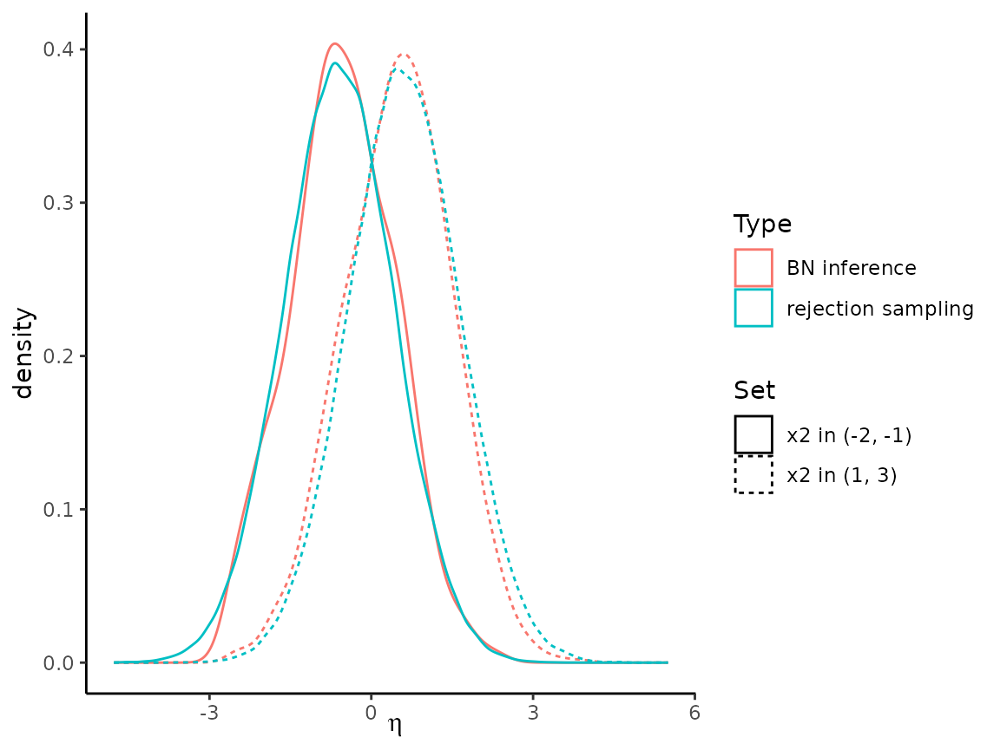

Example
Example.RmdThe following shows a basic comparison of the inference feature provided by the Bayesian Network translation of bnSEM and a rejection sampling approach.
The objective is to investigate the distribution of a latent variable given different values of one of the indicators () of a second latent variable .
We want to fit the following model
model <- '
xi =~ x1 + x2 + x3
eta =~ y1 + y2 + y3
eta ~ xi
x2~~x3
'To this end, we simulate some data:
# Simulation function:
simulate_data <- function(n){
xi <- rnorm(n)
eta <- .4*xi + rnorm(n)
unobs <- rnorm(n)
x1 <- 1*xi + rnorm(n,0,.2)
x2 <- .7*xi + .3*unobs + rnorm(n,0,.2)
x3 <- .5*xi + .2*unobs + rnorm(n,0,.2)
y1 <- 1*eta + rnorm(n,0,.2)
y2 <- .7*eta + rnorm(n,0,.2)
y3 <- .5*eta + rnorm(n,0,.2)
return(data.frame(xi, eta,
x1, x2, x3, y1, y2, y3))
}
data_set <- simulate_data(n = 100)First, let’s use bnSEM to find the distribution of for and :
# Now, we check if we can get the same distributions using a Bayesian Network:
fit <- mxsem(model,
data = data_set[,c("x1", "x2", "x3",
"y1", "y2", "y3")]) |>
OpenMx::mxTryHard()
#> Running untitled1 with 20 parameters
#>
#> Beginning initial fit attempt
#> Running untitled1 with 20 parameters
#>
#> Lowest minimum so far: 587.039224234481
#>
#> Solution found#>
#> Solution found! Final fit=587.03922 (started at 2370.7554) (1 attempt(s): 1 valid, 0 errors)
#> Start values from best fit:
#> 0.58957322846888,0.437456148851343,0.362483373166715,0.70875447376711,0.484343167810718,0.13069588666507,0.0021926799799419,0.0749159820500079,0.0839271246208961,0.0575835519258439,0.032384521260863,0.046399855919389,0.84888770062111,0.921460926590316,0.120593804111261,0.0831610913840666,0.0608359960286526,-0.101313354961244,-0.0287944446546238,-0.0169745721886592
network <- bnSEM::bnSEM(mx_model = fit)
#> Found covariances in your model. The model will be translated to an equivalent model with phantom variables. The model with phantom variables will be returned in the internal list as 'internal_model'
#> Refitting the model with phantom variables. The fit will be the same, but the variances of the residuals will change.
#> Running untitled1 with 20 parameters
#>
#> Beginning initial fit attempt
#> Running untitled1 with 20 parameters
#>
#> Lowest minimum so far: 742.73478037047
#> Not all eigenvalues of the Hessian are positive: 41112.9377520141, 40269.0782593558, 32109.0137143607, 6796.63117512331, 5836.57765333058, 5202.15925358388, 4993.35481632593, 4425.61883623414, 4076.5619026187, 2258.22796494618, 379.47102712697, 352.267663760332, 309.302826636337, 174.156542862969, 117.673148251869, 102.688462682348, 94.1674813064404, 73.7109255940361, 15.9336631393673, -36.3092440491057
#>
#> Beginning fit attempt 1 of at maximum 10 extra tries
#> Running untitled1 with 20 parameters
#>
#> Lowest minimum so far: 742.734780369188
#> Not all eigenvalues of the Hessian are positive: 41112.9391251458, 40269.2434366325, 32109.0827482213, 6796.63615511915, 5836.58611319398, 5202.15724212436, 4993.34792665086, 4425.61725718766, 4076.56935229086, 2258.22752718172, 379.456949978851, 352.27122012948, 309.301054488793, 174.146979876132, 117.675452283483, 102.675313578088, 94.1648135611788, 73.7074380689364, 15.9334572512767, -36.3278808469419
#>
#> Beginning fit attempt 2 of at maximum 10 extra tries
#> Running untitled1 with 20 parameters
#>
#> Lowest minimum so far: 742.734780369099
#> Not all eigenvalues of the Hessian are positive: 41112.962826288, 40269.1924586132, 32109.0859805537, 6796.63562799247, 5836.58429410825, 5202.15815898945, 4993.35396884986, 4425.62628906333, 4076.56682118898, 2258.22933329175, 379.467943510884, 352.26859048836, 309.308053393499, 174.151670474034, 117.674686279487, 102.681716721839, 94.1687135211073, 73.7095707060991, 15.9329311618466, -36.3115526706096
#>
#> Beginning fit attempt 3 of at maximum 10 extra tries
#> Running untitled1 with 20 parameters
#>
#> Lowest minimum so far: 742.734780369063
#> Not all eigenvalues of the Hessian are positive: 41112.9705563531, 40269.1866987349, 32109.0752251146, 6796.63265258234, 5836.58217713414, 5202.16128054996, 4993.34197335999, 4425.61921585506, 4076.5685291883, 2258.22761190819, 379.458219655846, 352.267563202534, 309.298524126581, 174.148583017495, 117.672628376517, 102.678425754875, 94.1683747586985, 73.7094026777081, 15.9259718797454, -36.3260499164841
#>
#> Beginning fit attempt 4 of at maximum 10 extra tries
#> Running untitled1 with 20 parameters
#>
#> Lowest minimum so far: 742.734780369063
#> Not all eigenvalues of the Hessian are positive: 41112.9695835807, 40269.1967248036, 32109.0896060025, 6796.64302327692, 5836.58530730099, 5202.16057128075, 4993.35850675624, 4425.62138233088, 4076.56744862467, 2258.23094338634, 379.467777434012, 352.269478428284, 309.305719196979, 174.154428379649, 117.674709085177, 102.689962628893, 94.1683624049218, 73.709271469415, 15.934528336365, -36.3194786735489
#>
#> Beginning fit attempt 5 of at maximum 10 extra tries
#> Running untitled1 with 20 parameters
#> Not all eigenvalues of the Hessian are positive: 41112.968244747, 40269.1935416263, 32109.0906280246, 6796.64231823569, 5836.58332475993, 5202.15749301625, 4993.3602314906, 4425.61558173538, 4076.56716551819, 2258.23167076163, 379.466922371944, 352.268080889064, 309.30385429774, 174.153888010166, 117.673192827581, 102.683038729891, 94.166350663224, 73.7107634092516, 15.9343621006985, -36.3186004885672
#>
#> Beginning fit attempt 6 of at maximum 10 extra tries
#> Running untitled1 with 20 parameters
#>
#> Fit attempt worse than current best: 4253.96681843262 vs 742.734780369063
#>
#> Beginning fit attempt 7 of at maximum 10 extra tries
#> Running untitled1 with 20 parameters
#>
#> Fit attempt worse than current best: 980.169184873152 vs 742.734780369063
#>
#> Beginning fit attempt 8 of at maximum 10 extra tries
#> Running untitled1 with 20 parameters
#> Not all eigenvalues of the Hessian are positive: 41112.7057008402, 40269.0754669934, 32108.8959789192, 6796.60293717256, 5836.58452190003, 5202.14633486553, 4993.35034684618, 4425.60920855256, 4076.56233155198, 2258.22526593963, 379.452197863741, 352.26397270073, 309.299203702758, 174.149615105233, 117.672620782477, 102.676204509343, 94.1639198823064, 73.7113658590918, 15.929407291551, -36.3228231985798
#>
#> Beginning fit attempt 9 of at maximum 10 extra tries
#> Running untitled1 with 20 parameters
#> Not all eigenvalues of the Hessian are positive: 41113.0938670642, 40269.1501568005, 32109.123372667, 6796.67861821802, 5836.57871869194, 5202.16280266464, 4993.33774758161, 4425.62777299009, 4076.56667299316, 2258.21837752492, 379.453867548606, 352.269488668362, 309.297883221068, 174.146611712716, 117.672515659601, 102.678680520653, 94.1662523268488, 73.7108000230034, 15.9293172051523, -36.3261434647813
#>
#> Beginning fit attempt 10 of at maximum 10 extra tries
#> Running untitled1 with 20 parameters
#> Not all eigenvalues of the Hessian are positive: 41112.9809613624, 40269.1643182148, 32109.082373482, 6796.62987432085, 5836.58336062199, 5202.15985124533, 4993.35037253669, 4425.61288259509, 4076.56729231003, 2258.22617776876, 379.458689971186, 352.271688640321, 309.299589136578, 174.148618984088, 117.676289815838, 102.677904620618, 94.1630929620473, 73.7079208453874, 15.9249469153145, -36.321686332198
#>
#> Retry limit reached#>
#> Retry limit reached; Best fit=742.73478 (started at 799.02924) (11 attempt(s): 11 valid, 0 errors)
#> Start values from best fit:
#> 0.588076132810366,0.43630114683821,0.361554214286269,0.708761605654486,0.484344814634398,0.894740481043832,0.0638932309403106,1.00000000000002e-06,1.00000000000006e-06,0.0575933174948648,0.0323790310884088,0.0464005033060238,0.85107914921548,0.921736487725876,0.120593854347161,0.0831613247045892,0.060835982639293,-0.101313264335251,-0.0287943954374778,-0.0169742745433154
dist_1 <- bnlearn::cpdist(fitted = network$bayes_net,
node = "eta",
evidence = (x2 > -2 & x2 < -1))
dist_2 <- bnlearn::cpdist(fitted = network$bayes_net,
node = "eta",
evidence = (x2 > 1 & x2 < 3))We want to compare the distributions to rejection sampling, where we simply simulate large samples and only keep those subjects that meet our criterion:
target_n <- 10000
rejection_sampling <- c()
n <- 0
max_it <- 10
it <- 1
while((n < target_n) & (it < max_it)){
data_ <- simulate_data(n = 1000000)
rejection_sampling_1 <- rbind(rejection_sampling,
data_[data_$x2 > -2 & data_$x2 < -1,])
rejection_sampling_2 <- rbind(rejection_sampling,
data_[data_$x2 > 1 & data_$x2 < 3,])
n <- min(nrow(rejection_sampling_1),
nrow(rejection_sampling_2))
it <- it+1
}Comparing bnSEM and rejection sampling, we find the following distributions for :
combined <- rbind(data.frame(Type = "BN inference",
Set = paste0("x2 in (", -2, ", ", -1, ")"),
dist_1),
data.frame(Type = "BN inference",
Set = paste0("x2 in (", 1, ", ", 3, ")"),
dist_2),
data.frame(Type = "rejection sampling",
Set = paste0("x2 in (", -2, ", ", -1, ")"),
eta = rejection_sampling_1[, "eta"]),
data.frame(Type = "rejection sampling",
Set = paste0("x2 in (", 1, ", ", 3, ")"),
eta = rejection_sampling_2[, "eta"])
)
combined$Type <- as.factor(combined$Type)
combined$Set <- as.factor(combined$Set)
ggplot(combined,
aes(x = eta, color = Type, lty = Set)) +
geom_density() +
xlab(expression(eta)) +
theme_classic()